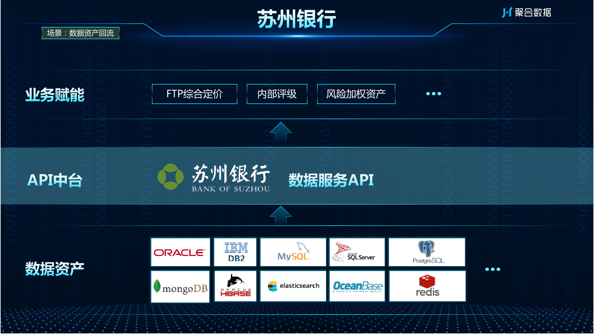

苏州银行的前身是江苏东吴农村商业银行股份有限公司，2011年经监管批准，由农村中小金融机构监管序列调整为中小商业银行监管序列。2019年8月2日，苏州银行登陆A股，为全国第33家、江苏省第9家上市银行。2020年3月9日，“2019年中国银行业100强榜单”发布，苏州银行排名第51位。

苏州银行在数仓建设过程中创建了新的数据模型，需要开放出去供外部系统调用。传统做法首先需要将数仓中的模型通过数据同步工具落地到目标数据库中，然后应用开发需要了解底层数据源细节，开发数据接口供调用，过程冗长复杂，难以维护，运维成本高。通过源码数据API服务系统平台可从数据库直接生成相关的操作API，搭配前端页面即可使用，极大简化基础 API 开发、维护工作。
通过本项目无编码直接从各种常见关系型数据库、非关系型数据库、大数据库中间件中生成统一格式的 HTTP Restful API。API生成好之后可直接测试、无需部署，极大简化基础API开发、维护工作。前端无需考虑后端语言、架构、部署维护等要素，可以直接使用平台自动生成的API，可节省大量的开发时间。解决了传统开发数据接口供调用联调，过程冗长复杂，难以维护，运维成本高等问题。
